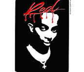

Nació el 13 de septiembre de 1996 en Atlanta, Georgia (cuna del trap). Se crió en Riverdale y, según él mismo cuenta, la música fue su vía de escape para no terminar metido en problemas en la calle. Carti creció en un hogar humilde. En varias de las pocas entrevistas que dio, mencionó que de chico no tenía plata para comprarse la ropa que quería ni los últimos lanzamientos de zapatillas, lo que terminó agudizando su ingenio para vestirse bien con poco. Mientras que la mayoría de los chicos de su barrio escuchaban puramente el rap comercial de la época o jugaban al básquet, Carti se pasaba el día en los skateparks. Ahí absorbió la estética del punk rock, las marcas independientes y la ropa de segunda mano. Durante su adolescencia, trabajó en una tienda de ropa usada (thrift store). Pasarse horas ordenando y descubriendo prendas viejas hizo que desarrollara un ojo único para la moda. Llegó un punto en el que el skate y la ropa le interesaban mucho más que los estudios. Carti odiaba ir a la escuela. En una entrevista con Fader, confesó: "I was in class working on music. I didn't go to school to learn, I just went to get fresh" (Estaba en clase haciendo música. No iba a la escuela a aprender, iba para lucir mi ropa). Se terminó graduando con lo justo, y él mismo cuenta que el día de la entrega de diplomas nadie podía creer que realmente lo había logrado. Nadie fue a verlo porque su familia no tenía fe de que se recibiera.
Historia De Vida
Trayectoria Músical

Empezó subiendo temas a internet con un estilo de rap más tradicional, influenciado por Gucci Mane y Curren$y. Su primer mixtape (hoy considerada "lost media" o difícil de conseguir completa) fue The成熟Vol.1 (2012). Deja atrás su viejo alias y se une al colectivo Awful Records en Atlanta, liderado por Father. Clásicos de esa época como "Broke Boi" y "Fetti" se volvieron himnos en SoundCloud. Su sonido era repetitivo, fresco y con bajos muy saturados. Su música llegó a oídos de ASAP Rocky. Carti firmó con el sello discográfico AWGE (de Rocky) e Interscope Records, mudándose a Nueva York y preparándose para el salto comercial. En 2017 lanzó su mixtape homónimo, que incluía el hit "Magnolia". El álbum debutó en el #3 del Billboard 200 y lo catapultó a la fama mundial. Su estilo minimalista y su voz melódica se convirtieron en su sello distintivo. En 2018 lanzó su primer álbum de estudio oficial llamdo "DIE LIT". Debutó en el puesto #3 del Billboard 200. Incluyó colaboraciones con Nicki Minaj, Travis Scott y Lil Uzi Vert. El álbum consolidó el trap punk: canciones rápidas, energéticas, ideales para el pogo (moshpits) en los conciertos, y con letras minimalistas pero increíblemente adictivas. Entre 2019 y 2020, decenas de canciones inéditas de Carti se filtraron en internet (como "Pissy Pamper / Kid Cudi"). En estos temas perfeccionó el "baby voice" (una voz extremadamente aguda). A pesar de no ser lanzadas oficialmente, se volvieron mega virales. el 25 de diciembre de 2020, "Whole Lotta Red" es su álbum más polarizante y disruptivo. Producido en gran parte por Filthy, introdujo el subgénero Rage: bases electrónicas agresivas, sintetizadores distorsionados inspirados en los videojuegos y una estética de vampiro gótico/punk. Aunque al principio recibió hate, hoy es considerado un álbum de culto que cambió el sonido de la década. Creó su propio sello y reclutó a Ken Carson, Destroy Lonely y Homixide Gang. Carti dejó de dar entrevistas y se convirtió en un líder espiritual de una nueva subcultura juvenil basada en la ropa negra de diseñador y el trap oscuro. A finales de 2023, Carti sorprendió al mundo al abandonar el baby voice y adoptar el "deep voice" (una voz rasposa, gruesa y oscura), demostrando una versatilidad vocal que pocos le adjudicaban. En lugar de usar plataformas tradicionales como Spotify, empezó a lanzar singles directamente en sus cuentas de Instagram y YouTube (temas como "2024", "UR THE MOON", "BACKR00MS" con Travis Scott, y "KETAMINE"), acumulando millones de reproducciones en horas. En 2024 logró su primer número 1 en el Billboard Hot 100 gracias a su brutal verso en la canción "CARNIVAL" del álbum Vultures 1 de Kanye West y Ty Dolla Sign. "I AM MUSIC" es el tercer álbum de estudio del rapero estadounidense Playboi Carti . Fue lanzado el 14 de marzo de 2025 a través de AWGE e Interscope Records . Este álbum de trap marca un cambio estilístico con respecto al estilo vocal de "voz infantil" de su anterior álbum de estudio, Whole Lotta Red (2020), hacia una interpretación más profunda y áspera, sin dejar de lado elementos asociados con la cultura de las mixtapes de Atlanta de la década de 2000.
Evolucion Del Sonido
El catálogo musical de Playboi Carti no es una simple lista de canciones, sino el registro de una metamorfosis radical que redefinió el sonido de una generación. Desde sus inicios lo-fi en la era dorada de SoundCloud y el trap minimalista de su mixtape homónima de 2017, pasando por la energía punk de Die Lit, hasta llegar a la disrupción gótica e industrial de Whole Lotta Red y la profunda oscuridad vocal de I AM MUSIC, Carti ha demostrado una capacidad única para destruir sus propios moldes. Explorar su archivo es sumergirse en una evolución constante donde cada era deconstruye el género, muta su voz como un instrumento y dicta de manera impredecible las reglas de la cultura urbana global.
Influencias En El Mundo Del Rap Y La Moda


Playboi Carti no solo cambió la forma de hacer música, sino que redefinió por completo la estética de la cultura pop contemporánea al convertirse en el puente definitivo entre el trap y la contracultura punk. En lo musical, destruyó las estructuras tradicionales de rapeo utilizando su voz como un instrumento de percusión experimental —alternando entre su icónico baby voice y su reciente deep voice— y fundando el sonido Rage, un subgénero abrasivo que hoy domina las pistas mundiales. En paralelo, su influencia en la moda dio vida al fenómeno global conocido como "Opium Core": un estilo gótico, militar y de alta costura dominado por el all-black y siluetas disruptivas que lo llevó de las calles de Atlanta a desfilar en las pasarelas de París para firmas como Balenciaga y Givenchy. Carti logró consolidarse no solo como un rapero de éxito, sino como el líder espiritual de una subcultura juvenil que viste, suena y se mueve bajo sus propias reglas.